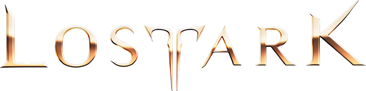
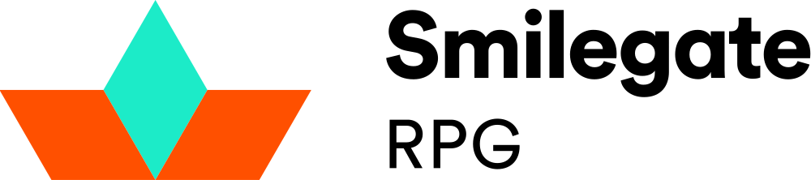
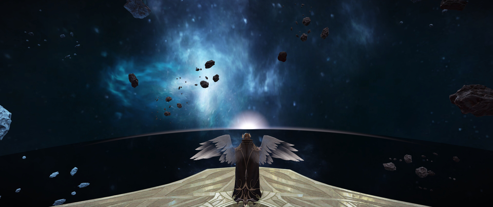

|
로스트아크 LOST ARK |
|
|  | |
|---|---|
| 개발 |  |
| 장르 | MMORPG |
| 디렉터 | 초대 금강선 (2018 ~ 2022) 2대 김상복, 전재학, 이병탁 (2022 ~) |
| 출시 |  2019년 12월 4일 2019년 12월 4일 |
| 게임 엔진 | |
| 한국어 지원 | 자막, 음성 한국어화 |
| 관련 사이트 | |


- 개요
- 시스템 요구 사항
- 스토리
- 등장인물
- 서버
- 아크투르스, 안타레스 서버가 통합됩니다.
- 에버그레이스, 베아트리스 서버가 통합됩니다.
- 이그하람, 알데바란 서버가 통합됩니다.
- 기에나, 프로키온 서버가 통합됩니다.
- 시리우스, 크라테르 서버가 통합됩니다.
- 루페온
- 실리안
- 아만
- 카마인
- 카제로스
- 아브렐슈드
- 카단
- 니나브
- 클래스
- 지역
- 오르페우스
- 아르테미스
- 유디아
- 루테란
- 토토이크
- 애니츠
- 아르데타인
- 베른 북부
- 슈사이어
- 로헨델
- 욘
- 페이튼
- 파푸니카
- 베른 남부
- 로웬
- 천공섬 엘가시아
- 플레체
- 볼다이크
- 트루아
- 트리시온
- 섬
- 혼돈의 세계
- 페트라니아

스마일게이트 RPG가 개발한 쿼터뷰 액션 MMORPG다. 2014년 11월 12일 최초 공개했으며 2018년 11월 7일부터 오픈 베타 테스트를 진행하였으며 2019년 12월 4일 정식 오픈했다. 이후 러시아, 일본, 글로벌 서버 순으로 런칭하였다.
플랫폼은 PC 하나뿐이지만 모바일과 콘솔 등 각종 플랫폼으로도 개발을 진행하고 있다는 기사가 존재한다.
| 시스템 요구 사항 | ||
|---|---|---|
| 구분 | 최소 사양 | 권장 사양 |
| Windows | ||
| 운영체제 | Windows 7 SP1 이상 | Windows 10 |
| 프로세서 | 인텔 코어 i3 이상 AMD 라이젠 3 이상 |
인텔 코어 i5 이상 AMD 라이젠 5 이상 |
| 메모리 | 8GB 이상 | 16GB 이상 |
| 그래픽 카드 |
NVIDIA GeForce GTX 460 혹은 AMD Radeon HD 6850 이상 |
1080p FHD NVIDIA GeForce GTX 1050 AMD Radeon RX560 2G 이상 1440p QHD NVIDIA GeForce RTX 2070 AMD Radeon RX5700XT 이상 Ultra Specs(4K, UHD) NViDIA GeForce RTX 2080AMD Radeon RX 6800 이상 |
| API | DirectX 9.0c (2010 June) 이상, DirectX 11.0 병행 지원 |
|
| 저장 공간 |
50GB 이상 | |
정식 오픈 기준 시점으로 최적화는 준수한 편으로, 권장 사양을 지킨다면 원활하게 플레이 가능하다. 2011년 이후에 나온 쿼드코어 이상의 CPU와 16기가 정도의 램을 갖춘 컴퓨터로도 대규모 전투를 연출한 상황에서 프레임이 조금 떨어지는 수준이다. 다만, QHD 이상 해상도에서 공식 요구사항이 극단적으로 높아지는 것을 볼수 있는데, 60프레임 완전 보장을 기준으로 설명된 것으로 추정된다. 실제 플레이 상황에선 FHD 해상도와, 모든 옵션 최상을 기준으로 6세대 이후의 인텔 CPU, 라이젠 이후의 AMD CPU와 GTX1060 정도의 사양으로도 원활한 플레이가 가능하다. UHD 이상급 해상도에선 2080급 이상의 그래픽 카드 사용을 권장한다.
과거엔 요구 사양에 라데온 그래픽카드를 아예 배제했었는데, 구형 API (DX9) 사용, 강제 수직동기화 활성화에 조절도 불가능한 점과 더불어 성능 문제가 심해서 아예 DXVK로 돌리는 게 훨씬 나을 정도. 수직동기화도 DXVK config로 해제할 수 있다는 소소한 장점은 덤이다. 사실 스타크래프트 2와 달리 지포스에서도 DXVK쪽의 성능이 더 높다. 반대로 DXVK가 안 통하고 라데온 지연 방지를 써야 하는 경우도 있다고 한다.
2021년 12월 하순에 실시된 DirectX 11 지원 업데이트 이후로 이 문제점들이 상당히 해소되었고 요구사양에 라데온 그래픽카드가 추가되었다.
자세한 내용은 로스트아크/스토리를 참고하십시오.
자세한 내용은 로스트아크/등장인물을 참고하십시오.
오픈 베타 테스트 시작일인 2018년 11월 7일, 초창기 루페온, 이그하람, 기에나, 시리우스 서버로 시작되어, 몇 차례의 서버 추가와 통합을 거쳐 2022년 1월 기준 8개의 서버가 존재한다.
2018년 11월 24일 서버 증설 관련 점검 이후 기존서버 수용 인원 및 신규 서버 증설로 대기열이 현저히 줄어들었다. 피크타임인 평일 오후 7시~10시, 주말 오후 1시~ 의 평균 대기열이 14000~18000명 정도였는데 11월 24일 서버 증설 이후 최대 2000~5000명 정도로 줄어들어 버틸만한 정도가 되었다. 그리고 12월 13일 평일 피크타임(오후 8시에서 9시정도)에는 최초의 4개 서버(루페온, 이그하람, 기에나, 시리우스) 정도만 대기인원이 1000명 정도 되고 나머지 서버는 없다시피 한다. 대기열 1000명 정도면 한 10분에서 15분 정도 기다리면 접속이 되니, 오픈 베타 때에 비하면 많이 줄었다. 12월 29일 현재 이러한 대기열 문제가 완벽히 해결됐다. 오히려 2019년 1월부터 몇몇 도시섭을 제외한 다른 서버들의 활동 인구 감소를 보였다.
2019년 4월 3일, 일부 서버의 통합이 이루어졌다. 통합 내용은 다음과 같다
2019년 7월 17일 본 서버를 제외한 나머지 서버의 통합이 이루어졌다. 통합 내용은 다음과 같다.
이후 카단, 니나브 서버가 추가되었다.
현재 서버 목록은 다음과 같다.
자세한 내용은 로스트아크/클래스를 참고하십시오.
로스트아크의 우주는 질서의 신 루페온이 창조한 질서의 세계 대우주 오르페우스에 속하는 생명의 별 아크라시아, 혼돈의 세계에서 어둠의 생명이 스스로를 분열시켜 어둠의 생명을 창조하여 만들어진 어둠의 별 페트라니아로 나뉜다.